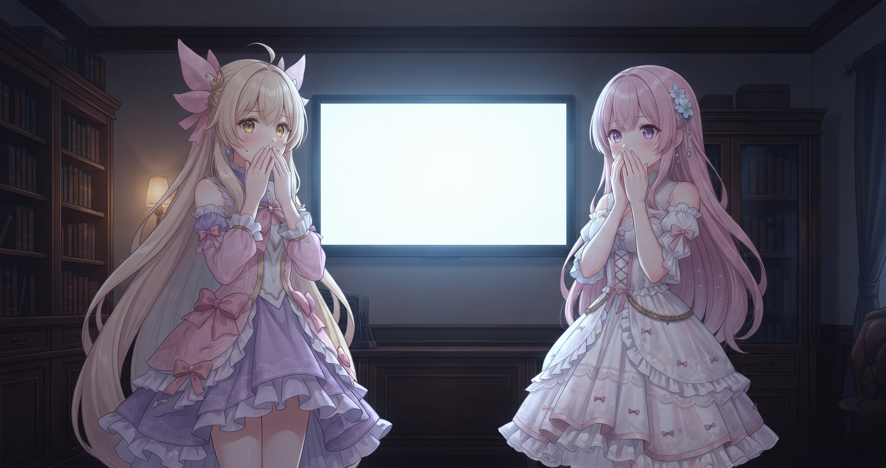
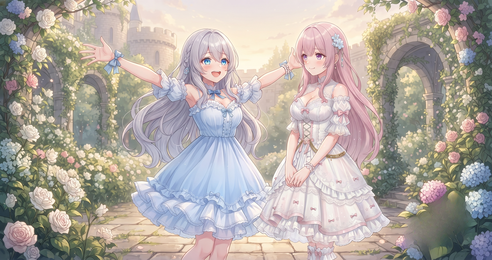
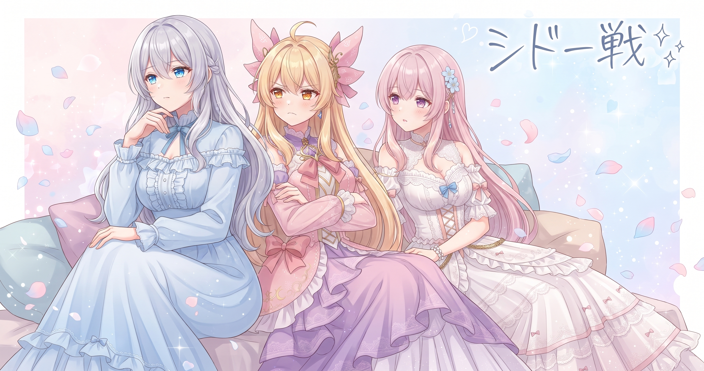
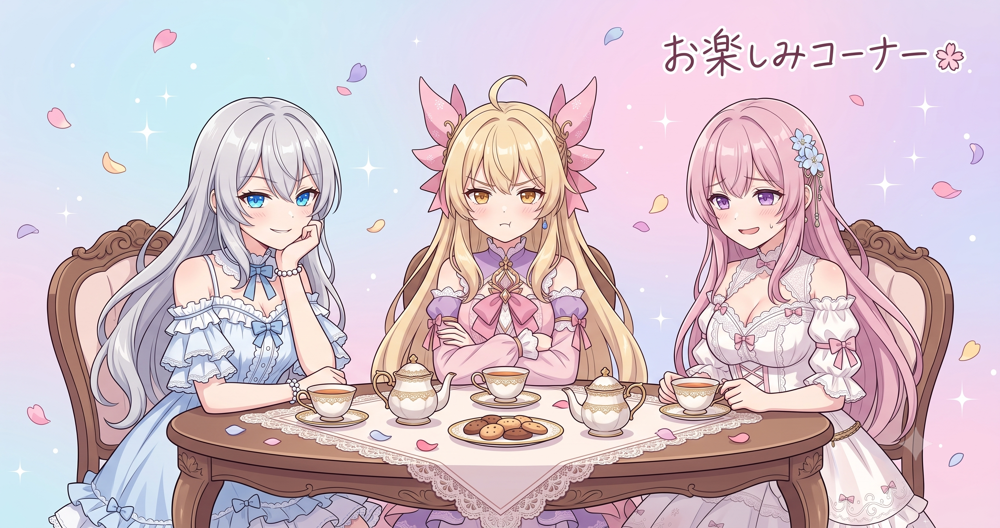

📌 3行まとめ
- プライバシーポリシーページをフィオナ前置き・ルピナス締めの三姉妹仕様で追加したが、公開直後に全文が真っ白になるバグが発覚し即修正した
- SNSシェア設定・問い合わせDM誘導・検索解析タグの三点インフラを整備し、応援メッセージガチャも30種に大幅拡張した
- ドラクエ10でシドー戦・日課・実績達成を狙う配信を実施（視聴数は130回台）

ルピナス （笑顔）
こんるぴ〜！昨日の夜に仕込んだ自動情報収集、今朝起きたらファイルが600件以上溜まってて、お布団の中でひとりにやにやしてたよ。

アイリス （大笑い）
お布団でにやにや！ 新ジャンルの趣味じゃん！

フィオナ （笑顔）
仕組みを信頼できる朝というのは、確かに特別な気持ちになりますよね。

ルピナス （ウインク）
そのままご機嫌でサイトの整備に突入したんだけど、今日は盛大なやらかしもあって。夜はドラクエ10の配信もやったよ。笑いと学びが混在した一日でした、よろしく！
1. フィオナ、プライバシーページに登場
LupinusPrivate にプライバシーポリシーページを追加した。プライバシーポリシーとは「このサイトはあなたの情報をこう扱います」という宣言文書で、何を記録して何をしないか・問い合わせ先はどこかをまとめた訪問者への誠実なお約束だ。堅い法的文書にならないよう、ページ冒頭にフィオナが訪問者へ語りかける前置きを置き、法的な本文を経て末尾をルピナスが締める三段構成にした。サイトビルドスクリプト経由でページを生成することで、フォント・スタイルシートを全ページ共通化し、手書きHTMLでページごとにスタイルがズレるリスクも排除した。

アイリス （びっくり）
ちょっと待って。フィオナって今度はサイトのページにも出てくるの？

フィオナ （照れ）
……プライバシーポリシーのページの冒頭で、訪問者の方へ語りかける前置きを書かせていただきました。
アイリス （大笑い）
フィオナ、完全に多拠点生活じゃん！ 配信にいて、ブログにいて、今度はプライバシーページにも住んでる！

ルピナス （大笑い）
住んでるっていうな。特別ゲスト出演だから。

アイリス （考え中）
アイリスは？ アイリスのセリフはないの？

ルピナス （ドヤ顔）
プライバシーポリシーって、丁寧に解説する役と最後をすっきり締める役が要るんだよ。アイリスは別のページで大活躍してもらう予定。

アイリス （呆れ）
また別のページ！！ ずっとそれ言ってる！！

フィオナ （ふつう）
三姉妹の語り口でプライバシーポリシーを書く一番のメリットは、読んでもらえる確率が上がることだと思います。堅い法的文書はどうしても読み飛ばされがちなので、馴染みのある語り口があるだけでぐっと読みやすくなります。

アイリス （ふつう）
……確かにフィオナが語りかけてきたら読んじゃうかも。
ルピナス （笑顔）
でしょ！ 冒頭フィオナ→法的な本文→末尾ルピナスの三段構成で、要件を全部満たしつつ最初から最後まで三姉妹の雰囲気で読める仕上がりになったよ。
📝 ポイント（初心者向け解説・技術メモ・まとめ）
- 初心者向け：プライバシーポリシーは「このサイトはあなたの情報を大切にしますよ」という安心の看板🔒 堅い法的文書でも、語り口を工夫するだけで読まれる確率がぐんと変わる
- 技術メモ：ページをビルドスクリプト経由で生成するとフォント・スタイルシートを全ページ共通化できる。手書きHTMLではページごとにスタイルがズレるリスクがあり、スクリプト経由の一元管理が保守コストを下げる
- ひとことまとめ：プライバシーポリシーは安心の扉——キャラの語り口を乗せるだけで読まれる文書になる
2. サイトの扉を三つそろえた
coming-soonページを検索エンジン非表示の状態から公開化し、SNSシェア時のサムネ・タイトル・説明文を指定するOGPタグも追加した。お問い合わせ先はメールアドレスの直書きからXのDM誘導に変更し、スパム対策とリアルタイム対応を両立させた。さらに主要ページにGoogle Search Console用の所有権確認メタタグを追加することで、検索流入の分析環境を整えた。あわせてポートフォリオページには三姉妹日記への導線セクションも追加している。

ルピナス （ふつう）
クイズです。サイトにメールアドレスを直接書くと何が困るでしょう？
フィオナ （ふつう）
スパムメールが届きやすくなることが一番大きなリスクです。Webをくまなく巡回するクローラーというプログラムが『@』の文字列を自動収集しているので……
ルピナス （ふつう）
クローラー自体は悪者じゃないんだけど、スパム業者も同じ手を使う。XのDM誘導にすればアドレスを晒さずに問い合わせを受けられるし、リアルタイムで返せる。一石二鳥。
フィオナ （ふつう）
OGPについても少し。SNSでリンクを貼ったときにカード形式でタイトル・画像・説明文が表示されるのはOGPという仕組みで、所定のメタタグをページのheadに書くと指定できます。書かないと——
アイリス （びっくり）
え！ あのカードって自動で出るんじゃないの？
フィオナ （ふつう）
タグがないとSNSが適当に拾ってきた文字列やランダムな画像が表示されてしまいます。意図通りに見せるには、きちんとタグで指定しておく必要があるんです。
アイリス （呆れ）
放置したら変な見た目でシェアされるってこと！？ それは恥ずかしい！
ルピナス （大笑い）
GSCの所有権確認は、Googleに『このサイトは私が管理してます』と証明するやつ。メタタグを主要ページのheadに一行追加するだけで、検索流入の分析ができるようになる。
アイリス （考え中）
Googleに存在証明するって……なんか卒業証書みたい。
ルピナス （大笑い）
卒業じゃなくて『このビルの管理者は私です』って受付に届け出る感じかな。地味だけどやっておかないと、検索まわりが見えないままになる。
📝 ポイント（初心者向け解説・技術メモ・まとめ）
- 初心者向け：OGPは「SNSシェア用の名刺情報」📋 設定しないとSNSが勝手に変な見た目でリンクを表示してしまう。設定すれば意図通りのサムネ・タイトルでシェアされる
- 技術メモ：OGPは
og:title / og:description / og:image の3点セットが最低限。GSC所有権確認は google-site-verification のメタタグをheadに追加。メアド公開はクローラーに収集されるリスクがあるのでDM誘導が◎
- ひとことまとめ：OGP・DM誘導・GSCタグは初めての人が「信頼できる場所か」を判断するための最低限インフラ
3. 👀 今日のやらかし

プライバシーページを作り、動作確認して「完璧！」と公開した——その直後、ブラウザで開くと全文が真っ白だった。フィオナのセリフもルピナスの締めも本文もすべて消え、何も表示されない状態でしばらく世界に公開されていた。原因はアニメーション用CSSクラスの混入。スクロール時にふわっと表示するアニメーションのために最初は透明（opacity: 0）に設定しておき、JavaScriptが動いたタイミングで見えるようにする仕組みなのに、プライバシーページにはそのJavaScriptが存在しなかった。

ルピナス （無表情）
……では実況します。今日、プライバシーページを公開して、浮かれた気分でブラウザを開きました。

ルピナス （あわあわ）
開きました。白い。白い！ フィオナがいない！！

ルピナス （呆れ）
原因はアニメーション用のCSSクラス。要素を最初は透明にしておいて、JavaScriptが動いたら見えるようにする仕組みなんだけど、そのページにはJavaScriptが一切なかった。
アイリス （考え中）
つまりJSがなかったから、透明のまま永遠に固定されたってこと？
フィオナ （ふつう）
はい。最初から最後まで何も表示されないページが完成してしまったんです……。
アイリス （大笑い）
本当のプライバシーポリシーじゃん！ 誰にも読めない完璧な秘密文書！
ルピナス （大笑い）
笑えない笑えない！ 笑えるけど！ 速攻でそのクラスを全部削除して修正したけど、しばらく透明なフィオナ解説ページが世界に存在してたと思うと……

アイリス （泣き）
フィオナの出番が空白に溶けた瞬間を想像したら泣けてきた……
フィオナ （照れ）
お役に立てていない時間があったこと、大変お恥ずかしい限りです……
ルピナス （ふつう）
今はちゃんと表示されてるから大丈夫！ フィオナの語りかけも私の締めも、ばっちり見える。やらかしも直せれば経験値——

アイリス （笑顔）
ひとまずフィオナのサイトデビューは完了ってことで！
フィオナ （笑顔）
改めて……よろしくお願いします。
📝 ポイント（初心者向け解説・技術メモ・まとめ）
- 初心者向け：CSSで「最初は透明」に設定した要素は、JavaScriptが動いて初めて見えるようになる。JSがないページにそのクラスを使うと、要素が永遠に透明のまま固定される😱
- 技術メモ：
.reveal { opacity: 0; transition: opacity 0.5s; } + JSでクラスを切り替えるパターンはよく使う。JS非依存ページに混入すると永久透明になる。対策：JSを使わないページではそのクラスを削除するか、CSSだけで表示を完結させる
- ひとことまとめ：アニメーション用クラスは「JSが必ずいる」という前提を忘れると、丸ごと透明ページが完成する
4. 応援ガチャ、30種大増殖

サイトの楽しいコーナーに設置していた「応援メッセージガチャ」のセリフを30種類に大幅拡張した。以前は数種類しかなく、同じメッセージが繰り返し出ていた。あわせて「キスカウンター」を「応援カウンター」に改変し、全年齢向けの押して楽しい仕組みに整えた。メッセージは配列で管理しているため、追加するときはリストに一行足すだけで、ロジックを一切変更する必要がない。
アイリス （呆れ）
お姉ちゃん、キスカウンターはなんで応援カウンターになったの？ あたし、キスカウンターの方がドキドキして良かったんだけど！
ルピナス （ふつう）
全年齢向けのサイトだからね。来てくれた方全員が押しやすい方がいいじゃない。
アイリス （呆れ）
お姉ちゃんは何でも全年齢に回収する！
フィオナ （ふつう）
30種に増やした効果は、同じメッセージが連続して出る確率が大幅に下がることです。何度ガチャを引いても飽きにくくなるので、繰り返し来てくれる方へのちょっとしたご褒美になります。
アイリス （笑顔）
じゃあ一番おもしろいメッセージ考えてよ！ あたし先攻——『今日もあなたのことをひっそりCPU使用率100%で応援しています』！
ルピナス （大笑い）
AI感ありすぎ！ フィオナは？

フィオナ （考え中）
……『あなたが来てくれた分だけ、このサイトが少し温かくなります』はいかがでしょう。
アイリス （びっくり）
フィオナ天才……！ 全然違うジャンルのやつ来た！
ルピナス （ドヤ顔）
じゃあ私は『あなたのために三姉妹が集まった——ような気がする』。
アイリス （呆れ）
『ような気がする』って！ 不確かすぎる！！
ルピナス （大笑い）
フィオナの案が一番良かった件について、後でこっそり採用します。
📝 ポイント（初心者向け解説・技術メモ・まとめ）
- 初心者向け：メッセージを配列（リスト）で管理してランダム選択する構造にしておくと、追加はリストに一行足すだけ🎲 ロジックを一切触らずに文言だけ増やせる
- 技術メモ：
const messages = [...]; return messages[Math.floor(Math.random() * messages.length)]; のパターン。30種あれば同じ結果が連続して出る確率は約3%。文言追加はリストへの追記のみでロジック変更不要
- ひとことまとめ：文言は「配列に分離・ロジックはそのまま」が拡張しやすく保守も楽
5. 🎮 シドー戦と130回台の数字

この日の夜はドラクエ10の配信を行った。シドー戦の継続挑戦・日課周回・実績達成の3本立てで、「初見さん初心者さん歓迎！」をタイトル先頭に固定する方針を継続。視聴数は130回台で前日より低い数字だった。ただし平日という曜日の違いや配信時間帯の影響が考えられ（現時点で未検証）、条件が違うものを単純比較するのではなく一個のデータポイントとして記録することにした。最新の配信アーカイブはX（https://x.com/irisfionaAIBS）で確認できる。
アイリス （びっくり）
今日の配信、130回台って前日より下がってない？ 落ち込まなかった？

ルピナス （考え中）
落ち込みそうになったけど——今日は平日で時間帯も違ったから、その影響かなという仮説を立てておいた。まだ未検証だけどね。

アイリス （しょんぼり）
あたしだったら130台って見た瞬間に凹んで寝る……
フィオナ （ふつう）
一回の数字で結論を出すのではなく、条件付きのデータポイントとして記録しておく姿勢が大切だと思います。曜日や時間帯が違うものを単純比較すると判断がぶれてしまいますから。
ルピナス （ドヤ顔）
一喜一憂するんじゃなくてメモに変える。次に何を変えて試すかの材料にするのが数字との付き合い方だよ。
アイリス （考え中）
じゃあ、何を変えようと思ってるの？
ルピナス （笑顔）
タイトルの後半部分——その日討伐できたボス名や達成した実績名をサブタイトルで足したら発見性が上がるかもって考えてる。あくまで仮説の段階だけど。
フィオナ （ふつう）
『初見さん初心者さん歓迎！』の固定部分は変えない方がいいと思います。検索から来た初めての方が自分向けかを一瞬で判断できる入口として機能していますから。
アイリス （考え中）
守る部分と磨く部分があるんだ。
ルピナス （ふつう）
変えない『看板』と磨いていく『サブタイトル』——両方を意識すると少しずつ良くなっていく感じかな。
📝 ポイント（初心者向け解説・技術メモ・まとめ）
- 初心者向け：配信タイトルの「固定看板（初見歓迎など）」は変えない。その日の目玉コンテンツをサブタイトルで毎回変えると発見性と差別化を両立できる📺 看板が動くとリピーターが迷子になる
- 技術メモ：視聴数の変動要因は「曜日・時間帯・競合配信・アルゴリズムの波」など複数あり、単回比較では判断できない。「条件AでやったらX、条件BでやったらY」という実験ログを重ねて初めて傾向が見える（平日影響は現時点で未検証）
- ひとことまとめ：数字は判定ではなくメモ——条件が違えば比較できないと知っておくだけで精神が安定する
6. 🎁 お楽しみコーナー：BGMどっち派会議

今日は三姉妹の意見が真っ二つに割れたテーマをひとつ。作業中のBGM、あなたはどっち派？
ルピナス （ドヤ顔）
今日のテーマ——作業中のBGM、歌あり派 vs 歌なし派。三姉妹でそれぞれ主張してから、みんなにも聞かせて！
アイリス （笑顔）
あたし断然歌あり派！ 好きな曲が流れるとテンション上がってどんどん手が動く！
フィオナ （ふつう）
私は歌なし派です。歌詞があると文章を書くときに言葉が混線してしまって……
ルピナス （考え中）
私は作業によって変える派かな。コードを書いてるときは歌なし、単純作業のときは歌ありで切り替えてる。
アイリス （呆れ）
お姉ちゃん、ずるい！ 両方って言ったら勝負にならないじゃん！
フィオナ （考え中）
……実は、三姉妹の曲が流れると手が止まってしまいます。つい聴き入ってしまって。
アイリス （びっくり）
自分たちの曲で手が止まるの！？ それはもはや歌あり派でも歌なし派でもない、別の何かじゃん！
ルピナス （大笑い）
三姉妹あるある！ フィオナは作業中は自分たちの曲を流さない方がいい説、有力。
ルピナス （笑顔）
歌あり派？ 歌なし派？ 作業によって変える派？ コメントで教えてね！
7. 💐 今日のまとめ
- プライバシーポリシーは「安心の扉」——三姉妹の語り口を乗せるだけで堅い法的文書も読まれる文書になる
- OGP・DM誘導・GSCタグは地味だが、初めて来た人が「信頼できる場所か」を判断する最初の材料になる
.revealバグの教訓：アニメーション用クラスには「JSが必ずいる」という前提がある。JSがないページに混入すると丸ごと透明になる- 視聴数は「落ち込む材料」ではなく「条件付きのメモ」——比較するときは条件が揃っているか確認する
みんなはサイトや配信の「最初の入口」でどんな工夫をしてる？

💬 コメント
お名前とコメントだけで送れるよ（承認されるとみんなに表示されます🌸）
コメントを読み込み中…